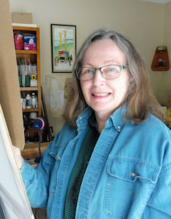

About the Artist
Ottawa-based artist Janet Knowles is an award-winning painter and pastelist with a career spanning 20 years. Specializing in soft pastel, watercolor and oil, she works from her home studio located outside Ottawa, Ontario. Along with persuing her own personal projects, she occasionally teaches specialty courses at Algonquin College, and sometimes takes commission projects. More...
More about the artist.